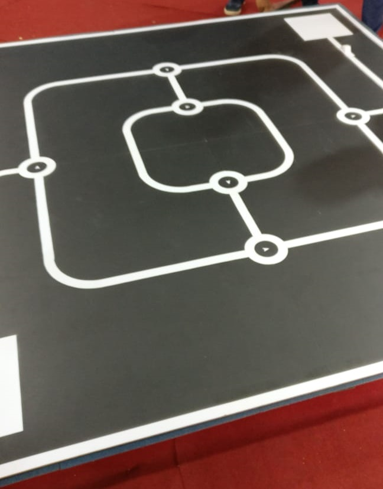

This implementation was done for a robot introduced to IESL robo games competition 2018. OpenCV was used to use computer vision based method to get the angle that the robot should rotate in order to follow the junction accurately. The path was like below image. But our implemetation can get any angle in -90 +90 rangle, to left or right.
